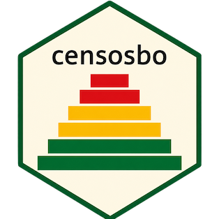

Documentación conceptual de las variables censales
Source:R/temas.R
codebook_docs_meta.RdTextos oficiales del INE para cada variable: qué mide, a quién se le preguntó, la pregunta tal como se leyó en campo, las instrucciones que recibió el censista y —para las variables que el INE construyó— cómo se calcularon.
Format
Un data.frame de 445 filas:
- anio
Censo: 2024, 2012, 2001, 1992 o 1976
- variable, tabla
Clave; coinciden con [codebook_meta]
- variable_ddi
Nombre en el diccionario del ANDA, que no siempre es el de los microdatos (en 2012 el ANDA usa `P23_PARENTES` y los datos `P23`)
- definicion
Definición conceptual de la variable
- universo_literal
Población de referencia, en las palabras del INE. La versión normalizada y comparable está en `codebook_meta$universo`
- pregunta_literal
La pregunta como se formuló, con sus opciones y saltos
- regla_derivacion
Cómo construyó el INE la variable; solo en las derivadas de 2024 y 1992
- notas
Advertencias del INE, como el significado de los códigos de omisión. Solo disponible en 2024
- informante
Quién respondía: `"jefe_hogar"`, `"persona_misma"`, `"empadronador"` u `"observacion"`
- instruccion
Instrucciones al censista. Es donde el INE define en términos operativos conceptos como hogar o residencia habitual
Source
INE Bolivia — catálogo ANDA, DDI de los estudios 132 (CPV-2024), 8 (CPV-2012), 10 (CNPV-2001), 47 (CNPV-1992) y 46 (CNPV-1976). El atributo `"ddi"` del objeto registra las URL, fechas de descarga y sha256 de los archivos usados. Los textos se reproducen literalmente; el INE los publica bajo la condición «Uso público».
Details
Va en una tabla aparte de [codebook_meta] a propósito: algunos de estos textos pasan de los 4.000 caracteres y harían ilegible la salida de [codebook()]. Consúltese con [codebook_docs()].
Cubre las variables de los cinco censos que existen en el paquete (445 de las 539 que documenta el ANDA; el resto son campos de texto abierto e identificadores que los microdatos publicados no incluyen).